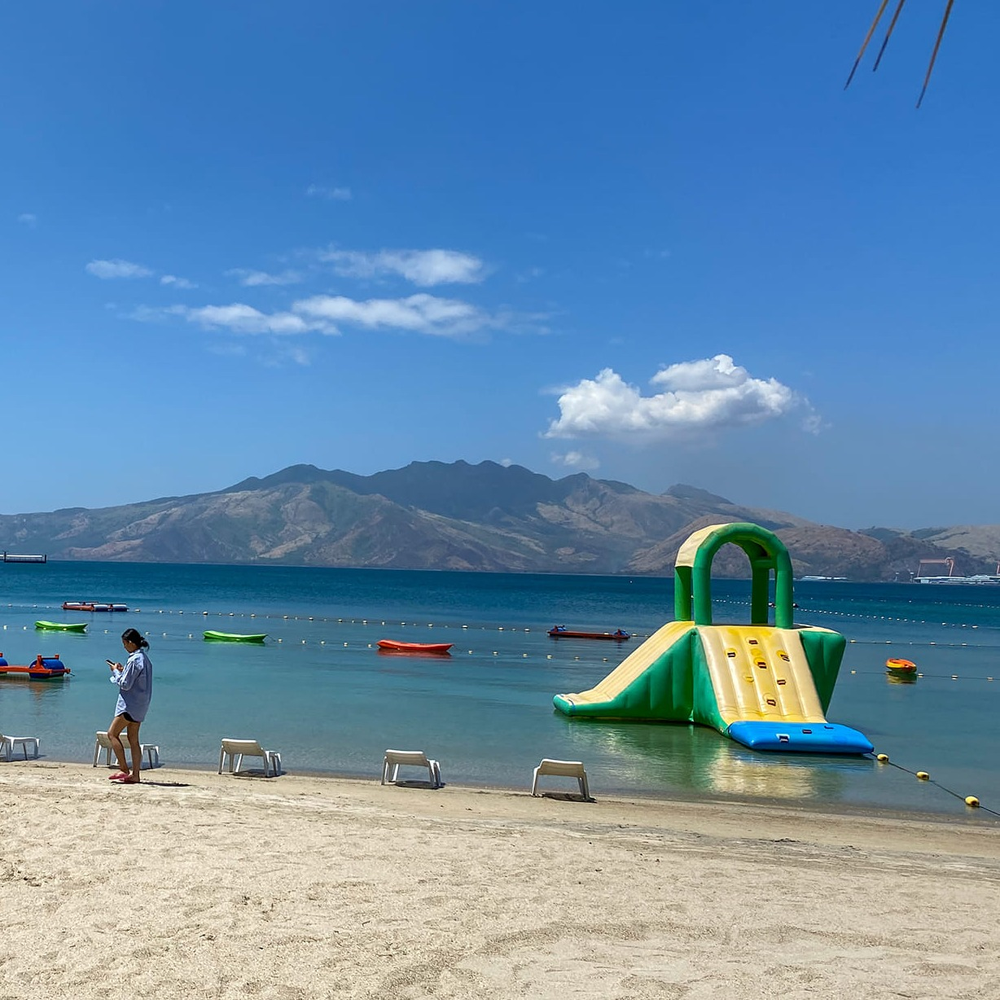

All Hands Beach
All Hands Beach is a serene and picturesque beach located in Subic Bay Metropolitan Authority (SBMA) in the Philippines. Known for its clear waters, white sand, and beautiful surroundings, it is a popular destination for both tourists and locals looking to relax and unwind. The beach offers various amenities such as cottages, water sports activities, and dining options, making it an ideal spot for a day of fun in the sun. Whether you're looking to swim, sunbathe, or simply enjoy the natural beauty of the beach, All Hands Beach is a must-visit destination in SBMA.
Location via google map
All Hands BeachAbout
All Hands Beach in Subic Bay Freeport Zone, Philippines, was established in 2015 as a family-friendly beach resort.
The beach is operated by the Subic Bay Metropolitan Authority (SBMA) and is known for its white sand, clear waters, and picturesque views of Subic Bay.
All Hands Beach is named in honor of the naval tradition of "all hands on deck," which signifies teamwork and cooperation. The beach
offers various activities such as swimming, beach volleyball, kayaking, and jet skiing. It also has a beach bar and restaurant where
visitors can enjoy food and drinks while relaxing by the water.
The beach is particularly popular among families and groups looking for a fun and relaxing getaway. It has become a favorite destination
for locals and tourists alike who want to escape the hustle and bustle of city life and enjoy the natural beauty of Subic Bay.
Overall, All Hands Beach in SBMA is a beloved destination for those seeking sun, sand, and sea while also promoting the values of teamwork,
cooperation, and relaxation.
Vehicle to use
There is a taxi available for transportation in front of Subic Gym.